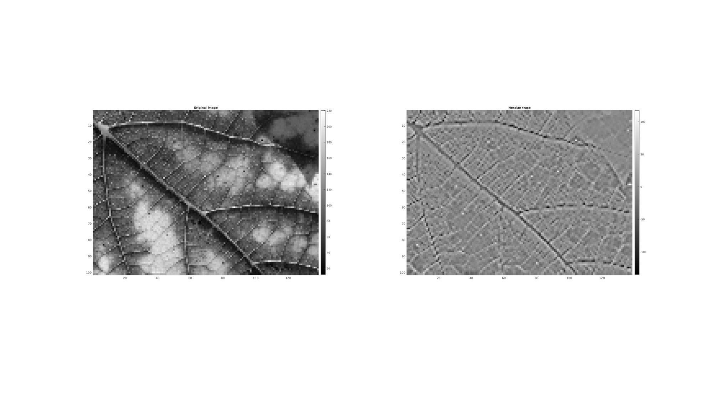

hessianScalar
Below is a demonstration of the features of the hessianScalar function See also: gradient,|hessian|,|jacobian|,|cellEig|.
Contents
clear; close all; clc;
Syntax
H=hessianScalar(M,voxelSize,cellOpt);
Description
This function computes the Hessian matrix of the scalar function U for each point in U. U may be a vector, a 2D matrix or a 3D matrix. The vector v denotes the points spacing between the data entries in U. If v is not supplied the spacing is assumed to be homogeneous and unity. If the input is n dimensional array consisting of m entries then the output is a matrix (if cellOpt==0) the size of mx(n^2) (whereby the colum entries define the entries in a Hessian matrix and row entries relate to elements in the input array). If cellOpt==1 then the output is reformed into a cell array that matches the size of the input aray. Each cell entry then contains the nxn Hessian matrix.
Examples
Plot settings
faceAlpha1=1;
faceAlpha2=0.3;
fontSize=10;
markerSize=25;
edgeWidth=1;
edgeColor='k';
cMap=gray(250);
1D Hessian on vector
%A random vector M=randn(10,1) %Compute Hessian H=hessianScalar(M,[],0)
M =
-1.0290
0.2065
1.3411
1.3327
-1.2849
1.6184
0.6616
0.2273
-0.2256
-0.9660
H =
-0.0505
-0.3362
-1.2490
-0.2101
1.1431
-0.4192
-0.7084
0.0494
-0.1484
-0.1437
2D Hessian on a matrix (e.g. an image)
Below an example is shown for the Hessian of an image.
Load example image
%Set main folder defaultFolder = fileparts(fileparts(mfilename('fullpath'))); pathName=fullfile(defaultFolder,'data','PICT'); loadName=fullfile(pathName,'leaf1.jpg'); %Load name M=mean(double(importdata(loadName)),3); %Import and conver to grayscale n=4; M=M(1:n:end,1:n:end);
Computing the Hessian of the image
voxelSize=[1 1]; cellOpt=0; H=hessianScalar(M,voxelSize,cellOpt);
In the above example the third input, cellOpt, was set to zero this leads to a m x (n^2) array whereby the colum entries define the entries in a Hessian matrix and row entries relate to elements in the input array. In this case a Hessian trace image can be computed as:
Mh_trace=reshape(H(:,1)+H(:,end),size(M)); %Compute trace for visualization
Visualize results
cFigure; subplot(1,2,1); hold on; title('Original image','fontSize',fontSize); imagesc(M); axis equal; axis tight; axis ij; colormap(cMap); colorbar; subplot(1,2,2); hold on; title('Hessian trace','fontSize',fontSize); imagesc(Mh_trace); axis equal; axis tight; axis ij; colormap(cMap); colorbar; drawnow;
The cell output option
Alternatively if cellOpt==1 then the output is reformed into a cell array that matches the size of the input aray. Each cell entry then contains the nxn Hessian matrix. However this requires a matrix to cell and reshape operation making this approach slower than when cellOpt==0. However after conversion to cell form each cell contains a Hessian matrix and computations on these matrices can be performed using the syntax: [B]=cellfun(@my_func,H,'UniformOutput',0); Where my_func is a suitable function for the Hessian matrices. For instance to computer a trace image one can use: [B]=cellfun(@trace,A,'UniformOutput',0); This form has also been created as a function, namely cellTrace, see below.
Computing the Hessian of the image
voxelSize=[1 1]; cellOpt=1; H=hessianScalar(M,voxelSize,cellOpt);
Each cell contains a Hessian matrix, for example:
H{1,1}
ans = -0.6667 -6.6667 -6.6667 3.0000
Compute a trace image using cellTrace function:
Mh_trace=cellTrace(H);
Computing eigenvalues using cellEig function:
[Mh_V,Mh_D]=cellEig(H); %Get first and second eigenvalues [Mh_D1]=cell2mat(cellfun(@(x) x(1,1) ,Mh_D,'UniformOutput',0)); [Mh_D2]=cell2mat(cellfun(@(x) x(2,2) ,Mh_D,'UniformOutput',0));
Visualize results
cFigure; subplot(1,2,1); hold on; title('Hessian 1st eigenvalue','fontSize',fontSize); imagesc(Mh_D1); axis equal; axis tight; axis ij; colormap(cMap); colorbar; subplot(1,2,2); hold on; title('Hessian 2nd eigenvalue','fontSize',fontSize); imagesc(Mh_D2); axis equal; axis tight; axis ij; colormap(cMap); colorbar; drawnow;


GIBBON www.gibboncode.org
Kevin Mattheus Moerman, gibbon.toolbox@gmail.com
GIBBON footer text
License: https://github.com/gibbonCode/GIBBON/blob/master/LICENSE
GIBBON: The Geometry and Image-based Bioengineering add-On. A toolbox for image segmentation, image-based modeling, meshing, and finite element analysis.
Copyright (C) 2019 Kevin Mattheus Moerman
This program is free software: you can redistribute it and/or modify it under the terms of the GNU General Public License as published by the Free Software Foundation, either version 3 of the License, or (at your option) any later version.
This program is distributed in the hope that it will be useful, but WITHOUT ANY WARRANTY; without even the implied warranty of MERCHANTABILITY or FITNESS FOR A PARTICULAR PURPOSE. See the GNU General Public License for more details.
You should have received a copy of the GNU General Public License along with this program. If not, see http://www.gnu.org/licenses/.